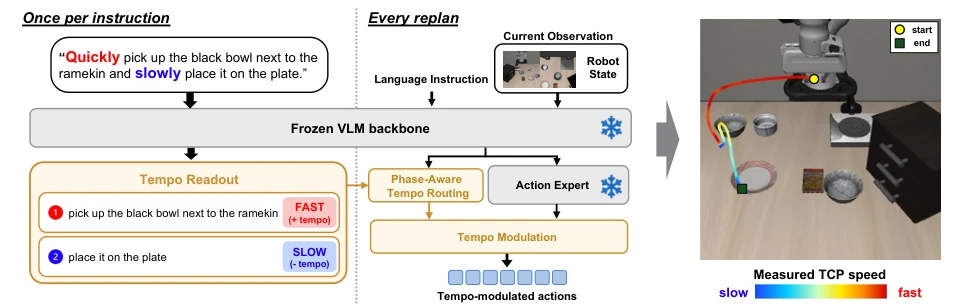
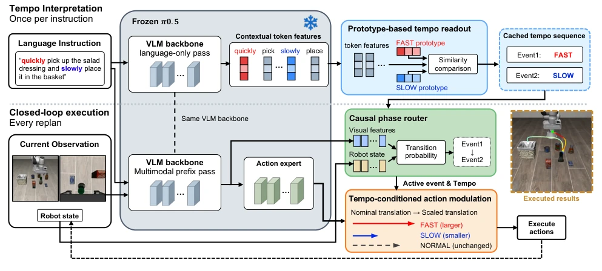
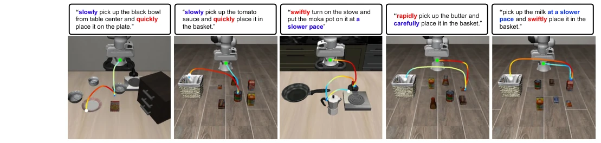
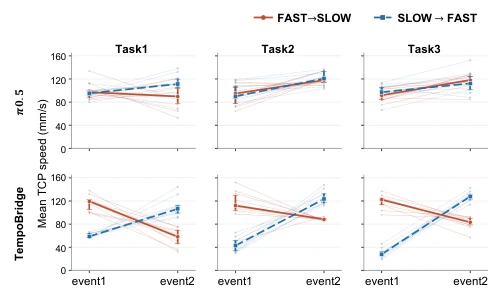
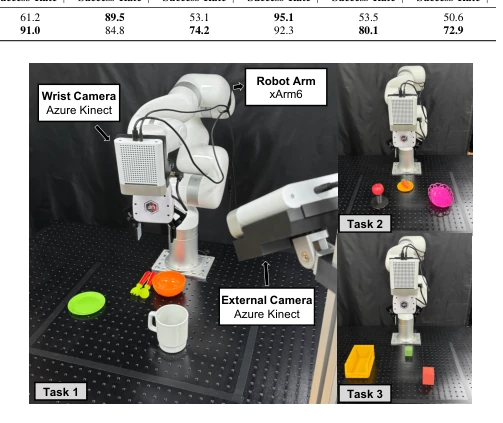

This paper equips VLA models with a "speed pedal", attempting to address the pain point of "knowing what to do but not how fast to do it". TempoBridge's idea is clever: instead of retraining the massive base model, it "mines" fast/slow semantics from frozen VLM features, coupled with a phase router to switch speeds. This approach of "piggybacking on" the frozen model's internal knowledge indeed saves the trouble of collecting expensive speed trajectories. However, whether this crude scaling based on fixed gains (1.3/0.7) can truly precisely control TCP speed physically, or merely makes the robot "look" faster or slower, is debatable. Furthermore, for semantically ambiguous words like "carefully", the recognition rate plummeted directly to 57%, indicating that the model's generalization ability towards non-explicit speed words remains fragile. Overall, this is a low-cost, high-return "patch", but it is still far from true fine-grained speed control.
Existing Vision-Language-Action (VLA) models [1], [2], [3] perform excellently in understanding "what to do" tasks, but have obvious shortcomings in controlling "how to do" (such as execution speed). Users often require robots to adjust speed according to scenarios, such as "grasp quickly, place slowly", but existing methods find it difficult to achieve this fine-grained language-conditioned speed control. Mainstream solutions usually rely on collecting large amounts of robot demonstration data at different speeds [8], [9], or performing expensive fine-tuning on the base policy [11], which leads to high data collection costs and difficulty in scaling. Although some works attempt to change behavior by intervening on the internal activations of frozen policies [5], [17], they often require manually identifying feature directions or relying on external numerical inputs, lacking the ability to directly read speed semantics from language instructions and dynamically adjust. TempoBridge aims to solve this core contradiction: Can existing semantic information in pre-trained VLA be utilized to achieve language-driven speed control without collecting speed data or fine-tuning the base policy?

Fig. 1. Language-conditioned tempo control with TempoBridge. TempoBridge reads tempo cues from the internal representations of a frozen VLA
TempoBridge is a lightweight framework, based on a frozen π0.5 VLA policy [12], containing three core modules. First is the "Prototype-based Tempo Readout". It performs only one forward propagation on the language instruction, utilizing residual stream features of the PaliGemma backbone network, and extracts the speed sequence in the instruction (e.g., [FAST, SLOW]) by calculating cosine similarity with preset FAST/SLOW prototype vectors. This process requires no gradient training, relying solely on text prototype construction. Second is the "Causal Phase Router". This is an online module that reuses visual features and robot state history from the policy forward propagation, predicting task phase transition probabilities through a GRU network. It is responsible for aligning the read speed sequence with the current task progress, deciding when to switch speed modes. Finally is "Tempo-Conditioned Action Modulation". Based on the current phase speed selected by the router, the translation components in the nominal action block output by the base policy are scaled (FAST multiplied by 1.3, SLOW multiplied by 0.7, NORMAL unchanged), while rotation and gripper commands remain unchanged. Throughout the entire process, the base VLA parameters are completely frozen, achieving speed control only through external modules.

Fig. 2. Overview of TempoBridge. Using the frozen VLM backbone within π0.5, a prototype-based tempo readout extracts an ordered tempo sequence from the instruction once and caches it for execution. At each replan, a causal phase router uses visual features reused from the policy forward pass and robot state to track task progress and select the active event. The corresponding tempo coefficient scales the translational components of the nominal action chunk.
The authors conducted evaluation on 40 tasks in the LIBERO benchmark, with the baseline being the π0.5 policy. Main metrics include Task Success Rate and Tempo Success Rate. Results show that in tasks containing "quickly/slowly" instructions, TempoBridge significantly increased the speed success rate from 52.6% to 89.7%, while task success rate remained at a high level of 92.9%, proving that task capability was not compromised. On unseen speed expressions (such as rapidly, carefully), the speed success rate still increased to 80.1%, but the recognition rate for "carefully" was lower (57.9%), revealing the limitations of semantic generalization. Ablation studies indicate that both the readout and router work effectively, and physical robot experiments (xArm6) verified that the method can produce measurable TCP speed changes.

Fig. 3. Qualitative examples of TempoBridge execution on LIBERO. The left two panels use quickly/slowly cues, while the right three use tempo expressions unseen during readout construction. Each panel shows the instruction and executed TCP trajectory, colored by measured TCP speed from slower motion (blue) to faster motion (red).

Fig. 5. Real-world TCP speed under FAST→SLOW (FS) and SLOW→FAST (SF) instructions. Columns correspond to the three tasks, with the task- adapted π0.5 baseline in the top row and TempoBridge in the bottom row. Thin lines represent individual task-successful rollouts, connecting the mean TCP speeds of Event 1 and Event 2. Bold lines indicate the median, and error bars show the interquartile range over 10 successful rollouts per condition.
其他图片Other Figures

Fig. 4. Real-world experimental setup with an xArm6 robot, external and wrist-mounted Azure Kinect cameras, and the three manipulation task configurations.